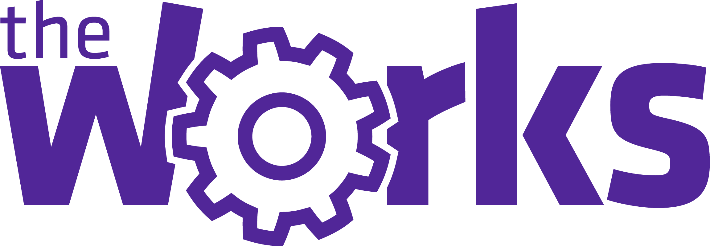

תעסוקה
מוזיאון הילדים חולון (2014-2017)
מכירת כרטיסים ושיבוץ סיורי המוזיאון לקהל הלקוחות
- עבודה צוותית בין העובדים
- מענה לשיחות נכנסות ועבודה תחת לחץ
- מתן יחס ושירות אישי, אדיב וחיובי ללקוח
- הפגנת כושר ביטוי, מידע ובקיאות בתכני הסיורים המוזיאון
הדרכה וחינוך- רשת קהילה ופנאי בחולון (2015-2017)
רכז ומדריך בני נוער במסגרת תוכנית משרד החינוך "נוער מתנדב"
- אחריות על שכבות בני נוער של כ-300 תלמידים
- העברת תכנים ופעילויות נוער המשלבים ערכים ונושאים חינוכיים
- חשיבה יצירתית, הגדלת ראש, ועמידה מול קהל המשלבים אינטרקציה ועניין.
- מחויבות, שייכות ונתינה לבני הנוער
- עבודה צוותית
- הקשבה לצרכים ויעילות למען שיפור וטיפוח פני הסביבה
- הגדרת חוקים ונהלים
- תרומות לקהילה
